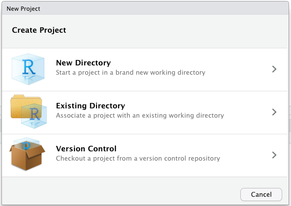
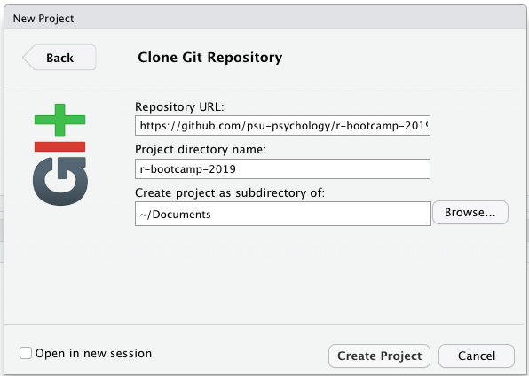

Before the R Bootcamp
This document describes the steps you must take to ensure that you are able to participate fully in the 2019 R Bootcamp.
We have chosen to run the 2019 R Bootcamp in computer classrooms with machines that are already connected to the Penn State network. This should make it easier for everyone to participate fully in the workshop without having to waste time on getting personal laptops connected to the network, installing R and RStudio, etc. Specifically, we are using a web-browser based version of RStudio that you can access from anywhere with internet access.
That said, you will probably want to set-up R and RStudio on your office, lab, or even personal computers down the line. So, we’ll provide information about how to do that, too.
Mandatory pre-workshop activities
Get a Penn State access account
You will need your Penn State Access Account user ID (e.g. rog1) in order to access the psu wifi. Your home department should set this up for you.
Set-up Two-Factor Authentication (2FA)
You will need 2FA for accessing Penn State computing services.
I find that 2FA works really well from my smartphone (iPhone), and there is even an app for my Apple Watch. Follow the detailed instructions at https://www.identity.psu.edu/set-up-instructions/ to set-up 2FA.
Test your PSU log-in credentials
Try logging in to a Penn State computer with your new access account and 2FA.
https://work.psu.edu is a good place to start. This is where you can add email aliases, email vacation notices, etc.
Optional Pre-workshop Activities
Test RStudio server log-in
With your access ID and 2FA credentials set-up, you can log-in to Penn State computers from any computer cluster. If you are a member of a lab with computers connected to the Penn State network, then you can test your log-in credentials on one of those machines. If you have set-up your personal machine to access the psu wifi network, you can test your log-in from your own machine.
- Connect to the Penn State network.
You can skip this step if you are working on a machine in a Penn State cluster.
Start a web browser.
Connect to https://lxclusterapps.tlt.psu.edu:8787
You should see the following login page:

Enter your PSU access ID (e.g., rog1) in the
Usernamefield (Do not add@psu.edu), and enter your PSU password in thePasswordfield. The use of a password manager like LastPass, 1Password, or DashLane is highly recommended.Hit the
Sign Inbutton or press return on your keyboard. You should see an RStudio window that looks very much like this one.
You are now ready to use RStudio Server Pro!
- (Optional) If you are really enthusiastic, try “sourcing” the following code:
# manage_packages.R
# helper functions to make installing and loading packages easier
bootcamp_pkgs <- c("afex",
"apaTables",
"backports",
"car",
"dataMaid",
"effects",
"emmeans",
"ez",
"ggfortify",
"ggmosaic",
"googlesheets",
"googledrive",
"Hmisc",
"interactions",
"knitr",
"lavaan",
"lme4",
"lmerTest",
"jtools",
"plyr",
"psych",
"rcompanion",
"Rtools",
"skimr",
"swirl",
"tidyverse",
"tufte",
"vcd")
install_bootcamp_pkgs <- function(pkgs = bootcamp_pkgs,
install_message = TRUE,
force_reinstall = FALSE) {
install_pkgs(bootcamp_pkgs, install_message, force_reinstall)
}
test_bootcamp_pkg_install <- function() {
if (!is.null(install_pkgs(c("ggplot2", "dplyr")))) {
message("Test fails.")
} else {
message("Test passes.")
}
}
install_pkg <- function(pkg, install_message = FALSE, force_reinstall = FALSE) {
if (force_reinstall) {
if (install_message) {
message(paste0("Reinstalling package: '", pkg, "'\n"))
}
install.packages(pkg, quiet = TRUE, verbose = FALSE)
} else {
if(require(pkg, character.only = TRUE, quietly = TRUE)) {
if (install_message) {
message(paste0("Package '", pkg, "': already installed.\n"))
}
} else {
if (install_message) {
message(paste0("Installing package: '", pkg, "'\n"))
}
install.packages(pkg, quiet = TRUE, verbose = FALSE)
}
}
}
install_pkgs <- function(pkgs, install_message = FALSE, force_reinstall = FALSE) {
unlist(lapply(pkgs, install_pkg, install_message, force_reinstall))
}Then, run install_bootcamp_pkgs() from the console. This will make sure you have all of the packages needed for the bootcamp installed on your RStudio Server Pro account. Many of theme have already been installed already. NOTEThis could take some time because there are some packages that have to be recompiled (rebuild from their original source code) to run on the RStudio Server Pro’s Linux operating system.
Set-up a personal computer to access the Penn State network
Set up Penn State (psu) wifi access
To setup access to the psu wifi network, you need to be on campus.
Follow the instructions here for your specific device and operating system.
I recommend setting up the eduroam profile in addition to the psu profile. It’s extremely useful when you travel to other institutions.
Connect to Penn State’s psu wifi
Once you have connected, try navigating to https://lxclusterapps.tlt.psu.edu:8787 to test whether you can connect.
Install PSU’s Cisco AnyConnect Virtual Private Network (VPN) client
The VPN client allows you to connect to PSU’s network securely from an off-campus location (like your home or favoriate coffee shop) and allows you to use some services that are otherwise only available to users who are on campus. The TLT RStudio Server Pro is one of these services. So, if you like the TLT RStudio Server Pro and want to use it while you are elsewhere, you’ll want to download, install, and use Cisco AnyConnect Mobile.
Follow the instructions at https://pennstate.service-now.com/sp?id=kb_article_view&sys_kb_id=b6132f781bdd3bc4d4eeea0dad4bcbe2 to install the Cisco AnyConnect Mobile client on your device.
Install R and RStudio
We suggest having a copy of R and RStudio on your own machine so that you can use these tools whenever you like!
If you are using a computer provided by Penn State (e.g., your supervisor’s laboratory), you may need assistance to install these tools. This software is provided under “Software Center” on Windows and “Self Service” on Macs, so with luck, you should be able to install them without needing IT to provide administrative permissions.
Install R first following instructions: www.r-project.org. The machine generating this page is using R version 3.6.1 (2019-07-05).
Install RStudio second.
Choose the installer for your computer platform from the files listed at www.rstudio.com/products/rstudio/download/#download.
Once you have installed RStudio, try opening it.
Install R packages
Packages are groups of tools that extend the R language in useful ways.
For the Slow-R track, you’ll only need to install the swirl package. From the R Console, enter install.packages('swirl').
For the meeting more generally, we suggest the following packages.
From the R Console, enter install.packages(c('ez', 'car', 'tidyverse', 'pacman', 'GGally', 'jtools')).
Create a GitHub account
It is not required for the bootcamp, but you may want to create a GitHub account so you can start using GitHub for your own reproducible workflows and contribute to other open source projects.
Visit github.com to create an account.
Obtain the materials for bootcamp
Although you need not access or use the materials from bootcamp during the meeting, many attendees may wish to step through the code in parallel with the instructor. You can access all data files and code at our GitHub repo. Note: We are still actively updating the materials in preparation for the workshop, so you may need to download updates to these materials over the course of the meeting (details below).
Setting up a project within Rstudio
To create a new project in Rstudio, choose File > New Project. In the dialog box that pops up, choose ‘Version Control’.

On the next screen, select ‘Github’:

Finally, on the following screen, enter the link for the R bootcamp 2019 repository in the Repository URL field:
https://github.com/psu-psychology/r-bootcamp-2019.git

In the field “Create project as subdirectory of,” choose where on your computer you want the files to be stored.
After you have the project open, you may wish to get the ‘latest and greatest’ for a given training module. As instructors, we may ask you to ‘pull the latest updates.’ This just means executing the ‘git pull’ command, which you could do from the command line, or even easier, in the Rstudio window, on the upper right, look for the ‘Git’ tab. To get the latest files, click ‘Pull.’ This will bring up a window that will display Rstudio’s progress in retrieving the files. This should bring you up to date on all of the modules.

If you understand Github already
To download all course materials, you can clone the entire Github repository using the command git clone https://github.com/psu-psychology/r-bootcamp-2018.git. This should be run in a terminal window.
If you’ve already downloaded the materials, but the instructor suggests getting the latest updates, go to the directory where you’ve stored this the materials on your computer. Then, on the command line, type git pull.
You can also use Github Desktop to clone the repository using a more user-friendly interface: https://desktop.github.com.
If Git is unfamiliar to you and you just want a snapshot of the materials, you can obtain a zip (compressed) archive of the current version of all files here: https://github.com/psu-psychology/r-bootcamp-2019/archive/master.zip. This link should auto-update, so you get updates by simply downloading this again, but we suggest using the project approach above.
Explore Your PASS space
The RStudio Server Pro application uses your PASS space for file storage.
To access your PASS space and upload files to it (like data),
- Visit https://webfiles.psu.edu/. You will see a login window like this:

- Enter your Penn State Access ID (e.g. rog1) and password. You should see the WebFiles interface:

Click on the
PASS Personal (X)text or the+icon in the left panel. This will open a window on the right that shows the contents of your PASS space.You may create new folders, upload, and download files using the WebFiles application.
Press the
logoutbutton in the upper right to logout when you are finished.